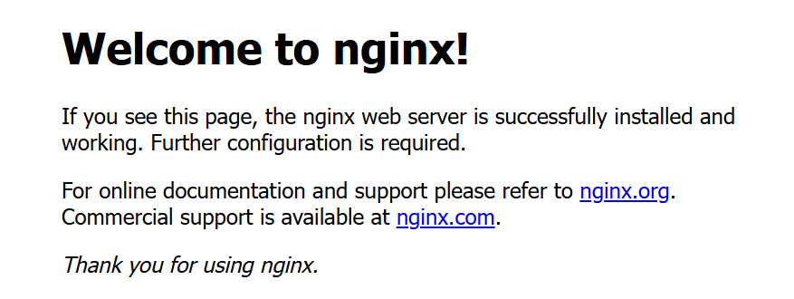
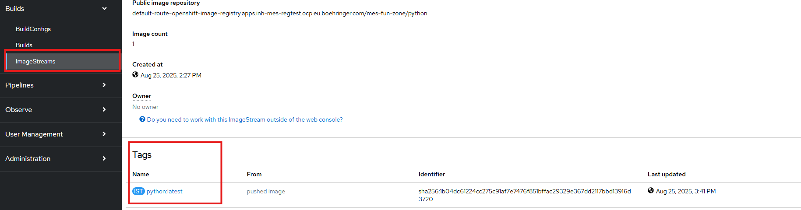
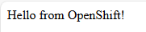
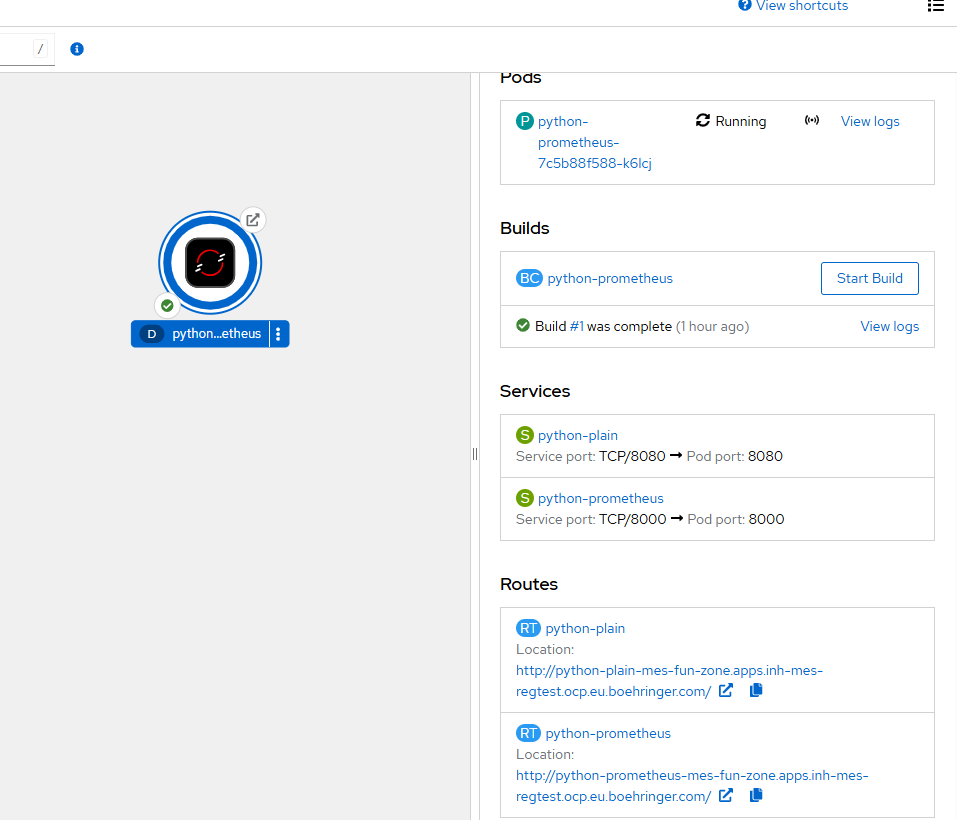
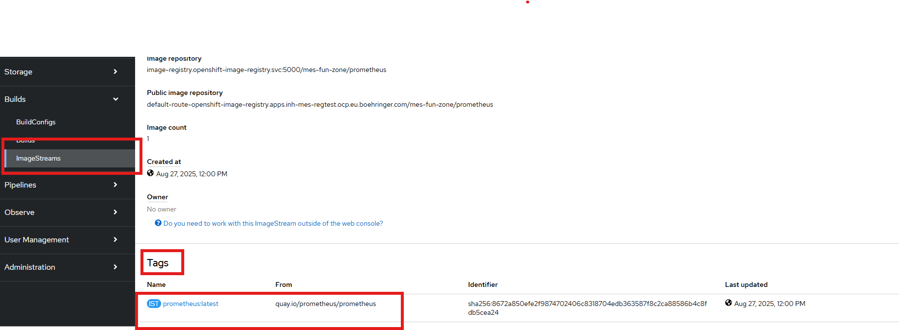
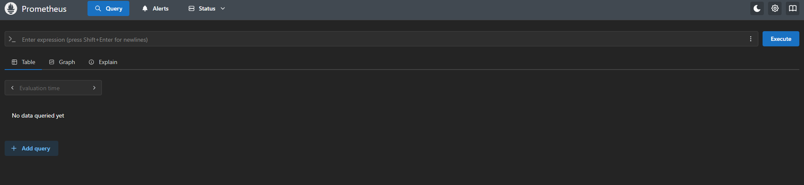
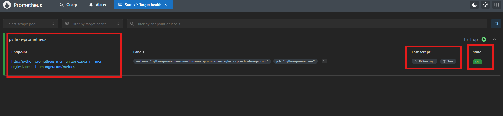

4. Hands-On Lab
Tasks
Task 0: Recap Quiz
To recap your knowledge until now. You should be able to answer the following questions. You can access the Quiz under the following link:
-
How does a Kubernetes Service in OpenShift know which Pods to route traffic to?
- It uses the Pod's IP address directly
- It matches the Pod's labels with its selector
- It queries the Deployment for Pod information
- It uses the container image name as a reference
-
What happens if a Deployment in OpenShift references an image that does not exist in the ImageStream?
- The Deployment will automatically build the image
- The Pod will start but fail during runtime
- The Pod will fail to start due to ImagePull errors
- OpenShift will fallback to a default image
-
Which of the following best describes the role of an ImageStream in OpenShift
- It stores container images in the internal registry
- It defines the build strategy for applications
- It acts as a reference point for image versions and triggers
- It manages network access between Pods
-
Which of the following statements about Deployments in OpenShift is true?
- A Deployment directly manages Pods without ReplicaSets
- A Deployment must always be paired with a BuildConfig
- A Deplyoment can be triggered by changes in an ImageStream
- A Deployment cannot be scaled manually
-
In OpenShift, what is the correct relationship between a Route and a Service?
- A Route exposes a Service, which then routes traffic to matching Pods
- A Route exposes a Deployment directly to external traffic
- A Route forwards to a Pod based on its IP address
- A Route must reference an ImageStream to function correctly
Task 1: ImageStreams and Deployment
-
Create a Imagestream which should refer an nginx image from Quay.io
Tip
There is a template in the GitHub in the folder: session4/nginx
- Create a deployment based on that newly created Imagestream.
- The Deployment should have the following characteristics:
- name: nginx-unprivileged
- port: 8080
- label: app: nginx-unprivileged
- image: REFERENCE-TO-IMAGESTREAM:TAG
Hint
You can create the Deployment by using the survey or by using the YAML input field. If you would like to use the YAML input, it can be helpful to reference the Kubernetes documentation: Deployments in Kubernetes
-
Create a Service names nginx-unprivileged of the Deployment
Hint
Keep in mind, that you are connecting the correct Deployment to yout service and to set the targetPort correct!
-
Create a Route of the Service to access the nginx Deployment from outside the cluster
-
Verify that the Deployment, Service and Route works correctly by entering the Route. It should look like this:

Task 2: Deploy from Containerfile
- Create a ImageStream
-
Create a BuildConfig by using the session4/python_app/buildconfig.yml file
Hint
You need to adjust some of the fields in the BuildConfig.
-
Start a Build
-
Verify that the Image is tagged to your created ImageStream

-
Create a Deployment of the python-app, which uses the newly tagged image of the ImageStream
- containerPort: 8080
- label: app=python
-
Create a Service of the python-app Deployment
Hint
Keep in mind, that you need to set the correct label and targetPort
-
Create a Route to access the python-app also from outside the cluster
Success
If everything works correctly, you should see the following message.

Task 3: Setting up Prometheus and Scraping logs from the python-app
We would now like to scrape metrics from the python-app in a Prometheus server.
The application has already defined an endpoint /metrics in the container file and in the app.py file, which runs on port 8000.
-
Make this Endpoint of the python-app accessible from inside and outside the cluster (Create service and route). Depending on the names you gave, it should like similar to this:
Hint
You already have created the Deployment, a Service and a Route, which listens on Port 8080. Now you should create a Service and a Route to the same Deployment but to the endpoint on port 8000

Now we can start to deploy the Prometheus server:
-
Create a ConfigMap, which should be consumed from the Prometheus server (manifest file can be found under the session4/prometheus/ folder in the GitHub)
Info
Contains the configurations for the endpoint from which the metrics are to be obtained (python-app) and, for example, the intervals at which the metrics are to be scraped
-
Create an imagestream, which refers to an Prometheus image from Quay.io

-
Create a Deployment which uses the image from the newly created ImageStream
Note
use the deployment.yml template, which can be found in the session4/prometheus folder on GitHub
-
Create a Service and a Route for the Prometheus server to acces it:

-
Verify that the Prometheus is scraping data from the python-app. In the Prometheus UI click on Status and then on Target health:
